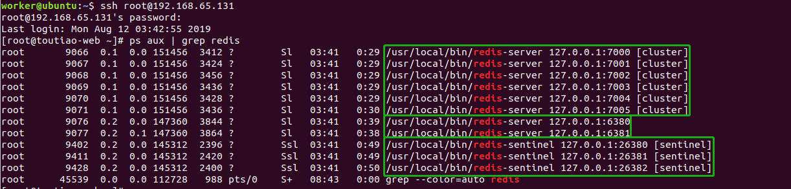

Redis
[TOC]
1. Redis回顾
1.1 redis数据类型及命令
1.1.1 基本命令
redis-cli -h 127.0.0.1 -p 6379进入redis-client命令行客户端select 0选择第一个库，redis默认0-15共计16个库keys *查看所有键flushdb清空当前数据库exit退出redis命令行客户端
1.1.2 键命令
适用于所有的类型
type key查看键值的类型del key删除数据exists key判断数据是否存在expire key 10设置10秒后过期persist key删除过期时间ttl key获取剩余时间move key 1将当前的数据库的key和值移动到数据库1，目标库有，则不能移动
1.1.3 String
记录字符串/整数/浮点数
set key value添加/修改数据get key获取数据mset k1 v1 k2 v2添加多个数据mget k1 k2获取多个数据incr key计数加1decr key计数减1incrby key n计数加nsetnx key value不存在就插入setex key expiry value写入数据并设置过期时间，单位秒
1.1.4 hash
类似
字典的结构
hset key name value向key添加字段name，name的值为valuehget key name获取key字段name的值hmset key name1 v1 name2 v2添加多个字段hmget key name1 name2获取多个字段hdel key name删除字段namehgetall key返回key的值
1.1.5 list
是一个
双向链表
lpush key v1 v2 v3从左侧追加元素
rpush key v1 v2 v3从右侧追加元素
lrange key 0 -1从左侧遍历元素，0和-1是下标范围，表示全部
lset key n v从左侧修改元素，设置下标n的值为v
lpop key从左侧删除元素，并返回删除的元素（弹出）
rpop key从右侧删除元素，并返回删除的元素（弹出）
llen key元素个数
ltrim key start stop裁切列表，只保留列表中start到stop下标的值# mylist = [1, 2, 3, 4, 5] ltrim mylist 0 2 # 只保留list中下标0到下标2的值 # mylist = [1, 2, 3]
1.1.6 set
无序集合 无序+去重
sadd key v1 v2 v3添加元素smembers key遍历元素sismember key v判断是否包含元素vsrem key v1 v2删除元素scard key元素个数
1.1.7 zset
有序集合, 按照分数(score)进行排序，值不能重复，但分数可以重复
zadd key s1 v1 s2 v2添加/修改元素zrange key 0 -1 withscores按下标遍历元素(按分数从小到大)，并显示分数zrevrange key 0 -1按下标反向遍历元素(从大到小)，不显示分数zrangebyscore key m n withscores遍历指定分数范围（m--n）的元素，并显示分数zscore key v查询key中元素v的分数zrem key v1 v2删除元素zincrby key n vkey中元素v的分数计数加n，key不存在分数设为1zcard key元素个数
1.2 python模块操作redis
安装
pip install redis操作
from redis import StrictRedis # 创建redis连接对象 db默认为0 decode_responses=True表示对返回的结果进行decode，即utf8编码 redis_cli = StrictRedis(host='127.0.0.1', port=6379, db=0, decode_responses=True) # 操作方法和redis原生命令一样 redis_cli.set('key1', 'value1') print(redis_cli.get('key1'))
2. Redis事务
2.1 Redis事务基本指令
Redis提供了有限的事务支持：可以保证一组操作原子执行不被打断，但是如果执行中出现错误，Redis不提供回滚支持。
语法
- MULTI
- 开启事务, 后续的命令会被加入到同一个事务中
- 事务中的操作会发给服务端, 但是不会立即执行, 而是放到了该事务的对应的一个队列中
- EXEC
- 执行EXEC后, 事务中的命令才会被执行
- 事务中的命令出现错误时,
不会回滚也不会停止事务, 而是继续执行- DISCARD
- 退出事务, 事务队列会清空, 客户端退出事务状态
总结：
MULTI # 开启事务 GET mykey SET mykey 10 EXEC # 执行
- 使用multi开启事务后，操作的指令并未立即执行，而是被redis记录在队列中，等待一起执行。当执行exec命令后，开始执行事务指令，最终得到每条指令的结果。
- 如果事务中出现了错误，事务并不会终止执行，而是只会记录下这条错误的信息，并继续执行后面的指令。所以事务中出错不会影响后续指令的执行。
Python客户端操作事务
在Redis的Python 客户端库redis-py中，提供了pipeline (管道)，该工具的作用是：
- 在客户端统一收集操作指令
- 补充上multi和exec指令，当作一个事务发送到redis服务器执行
from redis import StrictRedis r = StrictRedis.from_url('redis://127.0.0.1:6381/0') # from_url函数传入redis的uri p = r.pipeline() p.set('a', 100) p.set('b', 200) p.get('a') p.get('b') ret = p.execute() print(ret) # [True, True, b'100', b'200']
2.2 Redis事务watch监视指令
watch命令本质是redis实现的乐观锁，若在构建的redis事务在执行时依赖某些值，可以使用watch对数据值进行监视。
机制
- 事务开启前, 设置对数据的监听, EXEC时, 如果发现数据发生过修改, 事务会自动取消(DISCARD)
- 事务EXEC后, 无论成败, 监听会被移除
set a 1 watch a # 监视a的值 set a 2 multi get a exec # watch的a的值在exec时发生了改变，所以取消了事务，此时返回nil
- 注意：Redis Cluster 集群不支持事务
Python客户端操作watch事务
from redis import StrictRedis, WatchError cli = StrictRedis(host='127.0.0.1', port=6379) cli.set('key1', 'hahaha') # 设置测试的kv # 创建事务管道对象 p = cli.pipeline() try: # 监视key的值 p.watch('key1') print(p.get('key1')) # 可以使用管道对象立刻取出值 cli.set('key1', 'heiheihei') # 模拟watch的数据发生改变 print(p.get('key1')) # 读操作是立刻执行的 p.multi() # 开启事务管道 p.get('key1') # 事务管道添加了命令 ret = p.execute() # 执行并返回结果 print(ret) except WatchError as e: print(e)
3. Redis高可用
为了保证redis的高可用，redis提供了三种方式
- 持久化 ：单机保障
- 主从同步+Sentinel哨兵机制 ：
- 主从：故障切换，主死从替
- 哨兵：监控主服务状态，投票选择新的主节点
- 分布式集群 ：均衡负载
3.1 redis持久化
redis可以将数据写入到磁盘中，在停机或宕机后，再次启动redis时，将磁盘中的备份数据加载到内存中恢复使用，这是redis的持久化。持久化有RDB和AOF两种机制。
3.1.1 RDB 快照存储持久化
将
内存中的所有数据完整的保存到硬盘中，redis默认开启RDB 快照存储机制
- fork出一个
子进程,专门进行数据持久化, 将内存中所有数据保存到单个rdb文件中(默认为dump.rdb)- redis重启后, 会加载rdb文件中的数据到内存中
触发方式：
定期触发和手动触发
- 定期触发：配置中设置
自动持久化策略，配置如下save 900 1 # 多久执行一次自动快照操作 900秒（15分钟）内有1个更改, 则持久化一次 save 300 10 # 多久执行一次自动快照操作 300秒（5分钟）内有10个更改, 也持久化一次 save 60 10000 # 多久执行一次自动快照操作 60秒内如果更新了10000次, 也持久化一次 stop-writes-on-bgsave-error no # 创建快照失败后,是否继续执行写命令 rdbcompression yes # 是否对快照文件进行压缩 dbfilename dump.rdb # 快照文件命名 dir ./ # 快照文件保存的位置 #save # 打开注释则关闭RDB机制
- 手动触发：
SAVE|BGSAVE|SHUTDOWN(前提是设置了自动持久化策略)优缺点
- 优点
- 方便数据备份: 由于保存到
单独的文件中, 易于数据备份 (可以使用定时任务, 定时将文件发送给数据备份中心)- 节省资源提升性能: 子进程单独完成持久化操作, 父进程不参与IO操作, 最大化redis性能
- 恢复速度快：恢复大量数据时, 速度优于 AOF
- 缺点
不是实时保存数据, 如果redis意外停止工作(如电源断电等), 则可能会丢失一段时间的数据- 数据量大时, 创建单独完成持久化操作的子进程会比较慢（fork动作）, 持久化时使redis响应速度变慢
3.1.2 AOF 追加文件持久化
redis可以将执行的所有指令追加记录到文件中持久化存储，这是redis的另一种持久化机制。redis默认未开启AOF机制。
机制
- 主线程将
写命令追加到aof_buf(缓冲区)中, 根据使用的策略不同,子线程将缓存区的命令写入到aof文件中 (注意是redis服务进程的子线程)- 当redis重启时, 会重新执行aof文件中的命令来恢复数据
- 如果同时开启了 RDB, 则优先使用 AOF
配置
appendonly no # 是否开启AOF机制 # appendfsync always # 每个操作都写到磁盘中 # appendfsync no # 由操作系统决定写入磁盘的时机 appendfsync everysec # 每秒写一次磁盘，默认 no-appendfsync-on-rewirete no # 重写aof文件时是否执行同步操作 auto-aof-rewrite-percentage 100 # 多久执行一次aof重写, 当aof文件的体积比上一次重写后的aof文件大了一倍时 auto-aof-rewrite-min-size 64mb # 多久执行一次aof重写,当aof文件体积大于64mb时 appendfilename appendonly.aof # aof文件名 dir ./ # aof文件保存的位置(和rdb文件共享该配置)优缺点
- 优点
更可靠默认每秒同步一次操作, 最多丢失一秒数据
- 提供了三种策略, 还可以不同步/每次写同步
- 可以进行
文件重写, 以避免AOF文件过大- 缺点
- 随着时间的流逝，AOF文件会变得很大，相同数据集, AOF文件比RDB
体积大,恢复速度慢- 除非是不同步情况, 否则普遍要比RDB
速度慢关于AOF入文件修复、重写/压缩
文件修复
如果AOF出错 (磁盘满了/写入中途宕机等), 则redis重启时会拒绝使用该AOF文件
修复步骤
- 首先备份AOF文件
- 使用redis-check-aof工具进行修复 (一般会删除末尾无法恢复的命令)
- 重启redis服务器, 自动载入修复后的AOF文件, 进行数据恢复
redis-check-aof –fix # 可选操作: 使用 diff -u 对比修复后的 AOF 文件和原始 AOF 文件的备份，查看两个文件之间的不同之处。文件重写/压缩
- 用户可以向Redis发送
BGREWRITEAOF命令，这个命令会通过移除AOF文件中的冗余命令来重写（rewrite）AOF文件，使AOF文件的体积变得尽可能地小
- AOF 提供了重写/压缩机制(优化命令), 以避免AOF文件过大
- fork子进程来完成 AOF 重写
- 也可以通过设置
auto-aof-rewrite-percentage选项和auto-aof-rewrite-min-size选项来自动执行BGREWRITEAOF
3.1.3 RDB和AOF的综合使用
redis允许我们同时使用两种机制，通常情况下我们会设置AOF机制为everysec 每秒写入，则最坏仅会丢失一秒内的数据。
3.2 redis主从以及哨兵
3.2.1 redis数据库主从
作用
- 数据备份
- 读写分离
特点
- 只能一主多从
配置
/usr/local/redis/：ubuntu的redis安装目录, 其中包含了redis和sentinal的配置模板ubuntu中 启动/重启/停止 默认的redis服务
/etc/init.d/redis-server start/restart/stop# 主从数据库分别配置ip/端口 bind 127.0.0.1 port 6379 # 从数据库配置slaveof参数 slaveof 127.0.0.1 6379 # slaveof 主库ip 主库端口 # 以下两条连起来: 当至少有2个从数据库可以进行复制并且响应延迟都在10秒之内时, 主数据库才允许写操作 min-slaves-to-write 2 min-slaves-max-lag 10
3.2.2 Sentinel 哨兵
redis提供的哨兵是用来看护redis实例进程的，可以自动进行故障转移
作用
- 监控redis服务器的运行状态（心跳机制）, 可以进行
自动故障转移(failover), 实现高可用
- 独立的进程, 每台redis服务器应该至少配置一个哨兵程序
- 监控redis主服务器的运行状态
- 出现故障后可以向管理员/其他程序发出通知
- 针对故障,可以进行自动转移, 并向客户端提供新的访问地址
- 与
redis主从数据库配合使用哨兵工作机制
- 流言协议
- 当某个哨兵程序ping 发现监视的主服务器下线后(心跳检测), 会向监听该服务器的其他哨兵询问, 是否确认主服务器下线, 当 确认的哨兵数量 达到要求(配置文件中设置)后, 会确认主服务器下线(客观下线), 然后进入投票环节
- 投票协议
- 当确认主服务器客观下线后, 哨兵会通过 投票的方式 来授权其中一个哨兵主导故障转移处理
- 只有在 大多数哨兵都参加投票 的前提下, 才会进行授权, 比如有5个哨兵, 则需要至少3个哨兵投票才可能授权
- 目的是避免出现错误的故障迁移
相关配置 (sentinel.conf)
bind 127.0.0.1 # 哨兵绑定的ip port 26381 # 哨兵监听的端口号，一般都是redis端口号前边加1, redis客户端需要访问哨兵的ip和端口号 daemonize yes # 后台运行 logfile /var/log/redis-sentinel.log # 日志文件路径 sentinel monitor mymaster 127.0.0.1 6380 2 # 设置哨兵 (主数据库别名 主数据库ip 主数据库端口 确认投票最小哨兵数) sentinel down-after-milliseconds mymaster 60000 # 服务器断线超时时长 sentinel failover-timeout mymaster 180000 # 故障转移的超时时间 sentinel parallel-syncs mymaster 1 # 执行故障转移时,最多几个从数据库可以同时同步主数据库数据(数量少会增加完成转移的时长; 数量多则正在同步的从数据库会因同步而无法提供数据查询功能)
- `sentinel monitor mymaster 127.0.0.1 6380 2· 说明
- mymaster 为sentinel监护的redis主从集群起名
- 127.0.0.1 6380 为主ip地址和端口，将通过它来随机设定主数据库
- 2 表示有两台以上的sentinel认为某一台redis宕机后，才会进行自动故障转移。
- 最低配置
- 至少在3台服务器上分别启动至少一个哨兵
- 如果只有一台, 则服务器宕机后, 将无法进行故障迁移
- 如果只有两台, 一旦一个哨兵挂掉了, 则投票会失败
- sentinel要分散运行在不同的机器上
启动哨兵
redis-sentinel sentinel.conf
- 在启动哨兵之前需要先启动主从redis
Python客户端通过哨兵操作主从redis
from redis.sentinel import Sentinel REDIS_SENTINELS = [ ('127.0.0.1', '26380'), ('127.0.0.1', '26381'), ('127.0.0.1', '26382'), ] REDIS_SENTINEL_SERVICE_NAME = 'mymaster' # 哨兵配置中主从集群的名字 _sentinel = Sentinel(REDIS_SENTINELS, decode_responses=True) # 主从redis连接对象 master = _sentinel.master_for(REDIS_SENTINEL_SERVICE_NAME) slave = _sentinel.slave_for(REDIS_SENTINEL_SERVICE_NAME) # 正常操作redis数据，命令不变 # ret = master.set('b', '222') # 非事务命令管道 # p = master.pipeline(transaction=False) # 也可以使用事务管道操作，本质是python的redis模块代码实现的 p = master.pipeline() p.multi() p.set('a', '111') p.get('a') ret = p.execute() print(ret) # 读数据，master读不到去slave读 try: real_code = master.get(key) except ConnectionError as e: real_code = slave.get(key) # 写数据，只能在master里写 try: master.delete(key) except ConnectionError as e: print(e)注意
- 主从数据库的选择
- 只读操作可以选择从库，实现读写分离
- 又读又写的操作，建议直接使用主数据库‘
- redis主从不支持事务也不支持乐观锁
- 但在Python的redis模块中可以使用事务性管道和非事务性管道打包发送操作命令
3.3 redis cluster分布式集群
redis-cluster集群方案由多个节点共同保存数据，可以理解为都是master，且内部已经集成了sentinel机制来做到高可用。
作用
- 扩展存储空间
- 提高吞吐量, 提高写的性能
和单机的不同点
- redis-cluster不再区分数据库, 只有0号库, 单机默认0-15
- redis-cluster不支持事务/watch/管道/多键操作
特点
- 要求至少
三主三从- 要求必须开启
AOF持久化- 自动选择集群节点进行存储
- 默认集成哨兵, 自动故障转移
配置
# 每个节点分别配置ip/端口 bind 127.0.0.1 port 6379 # 集群配置 cluster-enabled yes # 开启集群 cluster-config-file nodes-7000.conf # 节点日志文件 cluster-node-timeout 15000 # 节点超时时长 15秒 # 开启AOF 及相关配置 appendonly yes创建集群
- redis的安装包中包含了redis-trib.rb，⽤于创建集群
- 创建集群后, 重启redis会自动启动集群
# 将命令复制到bin路径下，这样可以在任何⽬录下调⽤此命令 sudo cp /usr/share/doc/redis-tools/examples/redis-trib.rb /usr/local/bin/ # 安装ruby环境，因为redis-trib.rb是⽤ruby开发的 sudo apt-get install ruby gem sources --add https://gems.ruby-china.com/ --remove https://rubygems.org/ sudo gem install redis # 启动主从数据库 7000-7005.conf sudo redis-server 7000.conf ... # 创建集群 redis-trib.rb create --replicas 1 127.0.0.1:7000 127.0.0.1:7001 127.0.0.1:7002 127.0.0.1:7003 127.0.0.1:7004 127.0.0.1:7005 # 访问集群 访问集群必须加-c选项, 否则无法进行读写操作 redis-cli -p 7000 -cPython客户端通操作redisredis-cluster集群
python的rediscluster模块支持管道操作，不支持multi、watch等函数
# redis 集群 REDIS_CLUSTER = [ {'host': '127.0.0.1', 'port': '7000'}, {'host': '127.0.0.1', 'port': '7001'}, {'host': '127.0.0.1', 'port': '7002'}, ] from rediscluster import StrictRedisCluster redis_cluster = StrictRedisCluster(startup_nodes=REDIS_CLUSTER, decode_responses=True) # 可以将redis_cluster就当作普通的redis客户端使用 redis_cluster.set('haha', 1) # 不能使用watch、multi函数了！ 但还是可以使用管道 p = redis_cluster.pipeline() p.get('haha') p.set('haha', 2) p.get('haha') ret = p.execute() print(ret)
3.4 toutiao项目中的redis使用
一主一从，用于保存用户的阅读历史/搜索历史等
开启了持久化机制
配置了三个哨兵
6个cluster，负责实现缓存设计
本身自带哨兵机制

4. 课后阅读
- https://redis.io/documentation
- 《Redis实践》 （Redis in action) 【重要】